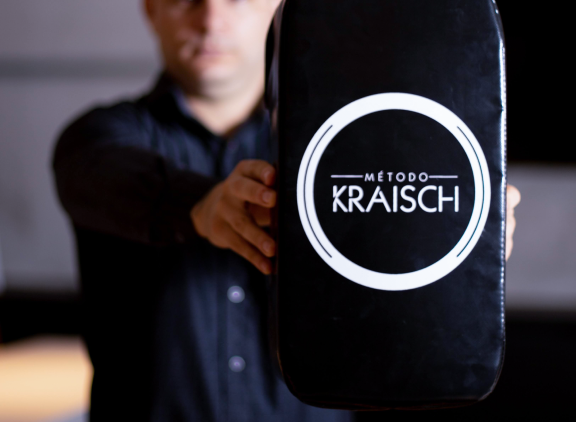
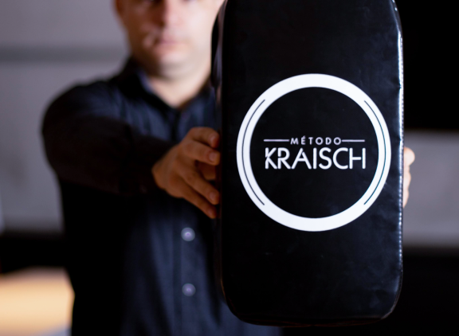

Pare de sofrer com
Ansiedade
Depressão
Insônia
Compulsões
Recupere o controle da sua vida com a Terapia de Reintegração Implícita.
Por que escolher a Terapia de Reintegração Implícita (T.R.I) ?
Porque é uma abordagem de Terapia Breve com bases nas neurociências e tem como facilitador a Hipnose. Trabalha de forma pontual e individualizada na resolução das demandas emocionais que estão por trás dos seus sintomas.
E quando buscar auxílio da Terapia Breve ?
Em qualquer situção que haja um desgaste emocional e metal como:
Ansiedade
Sofre diariamente com episódios de ansiedade, estresse, ataques do pânico ou distúrbios do sono.
Depressão
Tristeza prolongada, perda de interesse ou prazer em atividades que antes eram apreciadas.
Dores crônicas
Convive diariamente com dores crônicas como a Fibromialgia ou costuma ter enxaquecas sem razão aparente.
Problemas sexuais
Terapia focada em melhorar a vida sexual e tratar as disfunções sexuais.
Relacionamento
Melhorar relação com entes queridos. Libertar-se de relacionamentos abusivos ou lidar com o luto.
Baixa autoestima
Se tem a presença de sentimentos de infelicidade e de insatisfação consigo mesmo.
Compulsão alimentar
A terapia irá trabalhar as questões emocionais associadas e assim mudar o seu relacionamento com a comida.
Fobias
Tem medo de falar em público, medo de dirigir, medo de avião e outras fobias que te impedem de viver.
Insegurança
Sente que não é capaz de enfrentar a situação ou problema, mesmo tendo todo o conhecimento ou habilidade.
A T.R.I consistente em 3 etapas
1
1 Avaliação
Aqui que vamos conversar, você vai contar o que está te incomodando e como vem se sentindo. Também vou tirar qualquer dúvida, mito ou medo que você possa ter a respeito do processo. Você sairá com a sua sessão de terapia agendada, pronto para iniciar o tratamento e assumir a sua vida!
2
2 Terapia
Vou lhe ajudar a resolver o conflito emocional que vem te limitando e te causando tanta dor, aquele que conversamos na primeira sessão. Esse momento é seu, e nessa fase buscamos passar por 3 etapas primordiais para que o sucesso da terapia seja obtido. Revelar, Compreender e Reeducar suas emoções e sentimentos.
A sessão pode durar até 3 horas, então venha com roupas confortáveis para aproveitar melhor esse momento único e maravilhoso de transformação.
3
3 Retorno
Após a sessão de terapia vamos agendar a sua consulta de retorno para acompanharmos a sua evolução, “média de 30 dias".
Vale ressaltar que cerca de 90% dos clientes resolvem seus conflitos em duas sessões. Entendo que cada pessoa é um ser único, com suas necessidades e individualidades e se for necessário fazer mais de uma sessão, para o mesmo problema, ela já está inclusa no pacote.
Sobre seu terapeuta
Randolf Machado
Olá sou o Randolf Machado e irei lhe auxiliar nesta jornada.
Há mais de 2 anos trabalho como Hipnoterapeuta auxiliando as pessoas a se libertarem de suas demandas emocionais. Sou acadêmico do 5 semestre de Psicologia, especialista em Terapia de Reintegração Implícita pelo Instituto Kraisch, e hipnotista pelo Instituto Lucas Naves entre outras formações de PNL e Hipnose.
Desde muito jovem apaixonado pelas pessoas e suas histórias de vida, entrei nesta jornada de desenvolvimento pessoal e decidi ajudar pessoas como você, que carrega dores reais porém incompreendidas... e como eu sei disto? Já tive essas dores também e será uma honra guia-lo nesta jornada.
 

Sobre seu terapeuta
Randolf Machado
Terapeuta especializado em Terapia de Reintegração Implícita
Olá sou o Randolf Machado e irei lhe auxiliar nesta jornada.
Há mais de 2 anos trabalho como Hipnoterapeuta auxiliando as pessoas a se libertarem de suas demandas emocionais. Sou acadêmico do 5 semestre de Psicologia, especialista em Terapia de Reintegração Implícita pelo Instituto Kraisch, e hipnotista pelo Instituto Lucas Naves entre outras formações de PNL e Hipnose.
Desde muito jovem apaixonado pelas pessoas e suas histórias de vida, entrei nesta jornada de desenvolvimento pessoal e decidi ajudar pessoas como você, que carrega dores reais porém incompreendidas... e como eu sei disto? Já tive essas dores também e será uma honra guia-lo nesta jornada.

Depoimentos
“Me sinto livre, como nunca me senti antes.”
- Ana Claudia
“Nunca imaginei que a terapia poderia ser tão profunda.”
- Cleiton Diniz
“Minhas dores sumiram, até parece mágica. Isso que sou cética.”
- Marlene Amorim
“Estou em um estado de espírito que muito tempo não sentia.”
- Mario M.
Depoimentos
“Me sinto livre, como nunca me senti antes.”
- Ana Claudia“Nunca imaginei que a terapia poderia ser tão profunda.”
- Cleiton Diniz“Minhas dores sumiram, até parece mágica. Isso que sou cética.”
- Marlene Amorim“Estou em um estado de espírito que muito tempo não sentia.”
- Mario M.